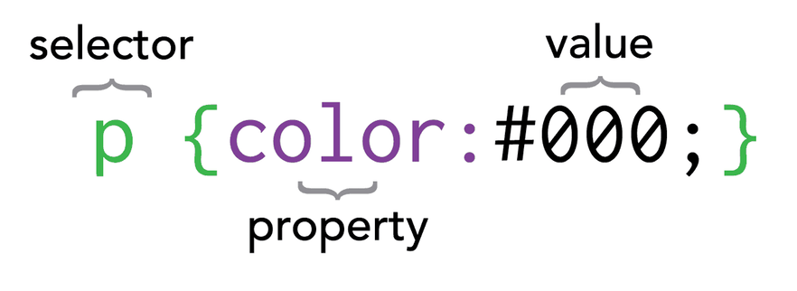

CSS自學秘笈
Cascading Style Sheets
CSS是什麼？
CSS是一種「樣式語言」，用來描述網頁元素（HTML元素）的各種外觀樣式，例如：顏色、大小、排版、或簡單的動畫效果。未經CSS修飾過的HTML，就像純文字文件一樣，幾乎沒有色彩、沒有排版、沒有尺寸變化的，這種網站沒有人會喜歡看，所以我們需要加入CSS語法，讓醜醜單調的網頁增添更多色彩與視覺設計元素。
其語法組成元素必須要有三部分：- 選擇器(selector) => 選擇哪些元素要受套用這個樣式（例如：標題字？圖片？或文章段落）
- 屬性(property) => 表示要針對哪些樣式做定義（例如：顏色？大小？或位置）
- 值(value) => 賦予所選屬性一個值（例如：紅色？20pt？或置中）
說這麼多五四三，到底CSS要怎麼寫
如上所示，完整的CSS語法必須包含選擇器、屬性與值，用法如下：
這段語法是在寫，將所有<p>元素的「內文顏色」設定為「#000（黑色）」
選擇器(selector)
CSS選擇器有很多種，每種選擇器有他應用的地方，常見的有element 選擇器、class 選擇器、id 選擇器
Element Selector
使用方法：假設要選擇所有的 <p>，則寫 p {屬性: 值}
- 例1：p { color: red} ，此語法代表：選擇所有的 p 元素，並將其內文顏色設定為紅色。
- 例2：button { background-color: orange }，此語法代表：選擇所有button元素，並將其「背景顏色」設為橘色。
Class Selector
有的時候我們不會想要一次抓取全部的元素，例如：我有十個 <button>，但我只想選擇其中幾個來做樣式設定，這時候就不能使用 element selector（因為會抓到全部的 <button>），取而代之的是 class selector。
Class 的概念類似一種「類別」，我們必須先在 HTML 裡定義哪些 Element 屬於哪個 Class，才能使用 Class Selector 選取這個類別的所有元素。
- 例如：<p class="apple">....</p>，以上就是定義這個 <p> 元素是屬於「apple」的個 class 的。接著我們才可以使用 class selector 來選擇他。
- 例如：.apple { color: red }，此語法代表：選擇所有 class 為 apple 的元素，將其內文設為紅色。
Id Selector
這個選擇器相對比較少使用，但在開發 Javascript 時會比較常出現，也不難理解。
Id Selector 的用法跟第二個提到的 class selector 頗為相似，需要先在HTML裡定義某某元素的 Id 是什麼，才能使用，唯一的不同是，同一個 Id 只能被一個元素所擁有。
HTML該這樣寫：<h1 id="title">...</h1>，以上就是定義這個 <h1>元素的 Id 為「title」，（於是其他元素的Id不可以是title了）。
- 例如： #title { color: red }，此語法代表：選擇這個id為title的元素，並將其內文設為紅色。
屬性 ( Proterty ) 與值 ( Value )
每種元素有不同屬性可以使用，有些屬性是共通的、有些是自己特有的。
例如：<p> 元素有 font-size 屬性（即字體大小），但 <img>（即圖片）就不會有這個屬性。比較共通的屬性如：margin-top（與上方物件的距離）等等。
常用的屬性列表與其值
顏色相關：
- color 內文顏色 ｜ 色名、RGB色碼、HSL色碼 //color: #333
- background-color 背景顏色 ｜ （同上）
- border-color 邊框顏色 ｜ （同上）
- opactiy 不透明度 ｜ 0.0 至 1.0 區間 //opacity: 0.5
尺寸相關：（一般使用數字 ＋ "px" ）
- font-size 內文字體大小//font-size: 25px
- width 元素寬度
- height 元素高度
- border-width 邊框寬度
文字相關：
- font-size
- color
- letter-spacing 字距
- line-height 行距
- text-align 對齊 ｜center（置中）、left（置左）、（置右）
- text-decoration 文字裝飾 ｜ none（無裝飾）、underline（加底線）、line-through（加刪除線）
排版相關：
- padding-top 元素內距（上方）、padding-right、padding-left、padding-bottom
- margin-top元素外距（上方）、margin-right、margin-left、margin-bottom
- display 顯示方式 ｜ block、inline
- float ｜right、left